Mortal Kombat es un videojuego de lucha creado por Ed Boon y John Tobias en 1992, conocido especialmente por sus personajes y su violencia grafica.
Como resultado de su éxito, Mortal Kombat ha dado lugar a varias secuelas y se ha escindido en varios juegos de acción y aventura, ha tenido películas, series de televisión e historietas.
Historia dentro del Juego
En una misteriosa isla, internada en los mares de China, y desconocida por el resto del mundo, los luchadores sobrenaturales luchan por el destino de la Tierra. Ese gran torneo es conocido como Mortal Kombat y ha sido por años una competición de honor y gloria. Luchadores de todo el mundo eran invitados a combatir.
El primer juego de Mortal Kombat tiene lugar en Earthrealm (Tierra), donde siete guerreros diferentes con sus propias razones para ingresar al torneo con el premio siendo la libertad continua de su reino bajo la amenaza de una toma de control por parte de Outworld. Entre los guerreros establecidos estaban Liu Kang, Johnny Cage y Sonya Blade. Con la ayuda del dios del trueno Raiden, los guerreros de Earthrealm salieron victoriosos y Liu Kang se convirtió en el nuevo campeón de Mortal Kombat.

Primer Mortal Kombat
Desarrollado y publicado por Midway en 1992
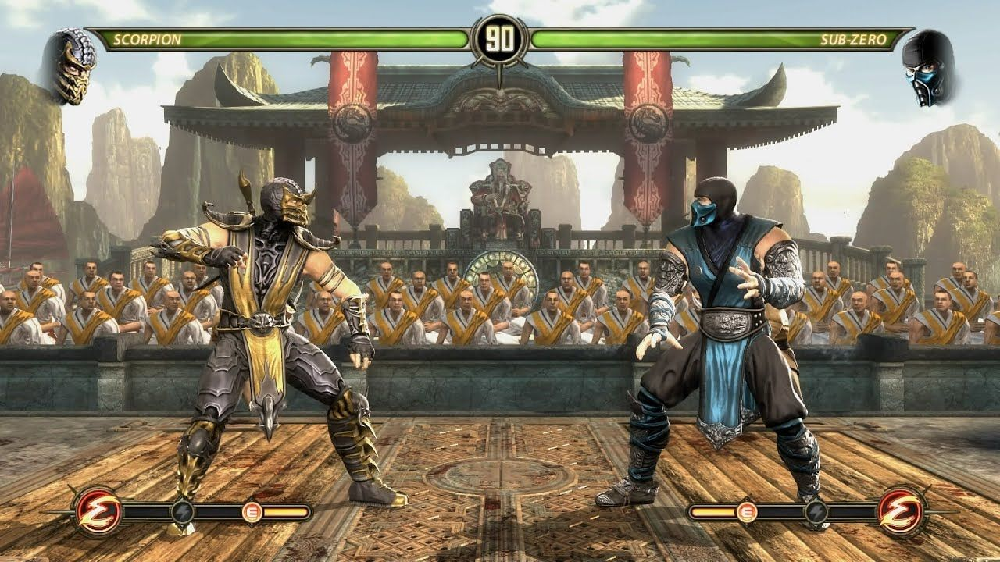
Mortal Kombat 9
Desarrollado por NetherRealm Studios y publicado en 2011

Mortal Kombat El reinicio
Desarrollado por NetherRealm Studios y publicado en 2023
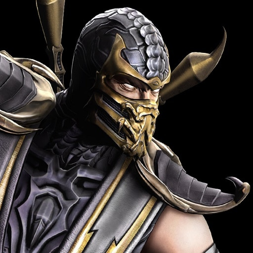
Scorpion
Es un ninja espectro, el cual se define principalmente por su búsqueda de vengar la muerte de su familia y su clan. Su arma principal, además del fuego, es una lanza kunai, que usa para arponear a sus oponentes.
Más información
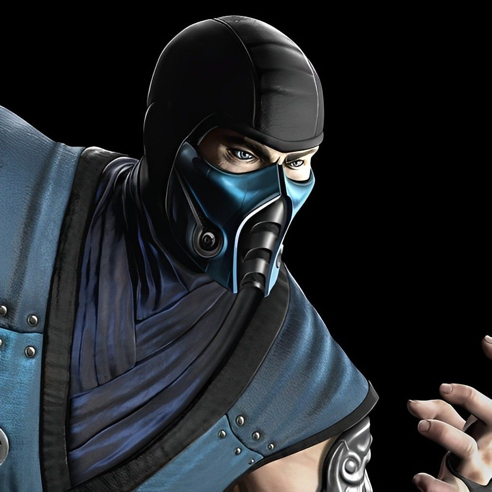
Sub-Zero
Es un guerrero del clan Lin Kuei, el personaje se define principalmente por su capacidad para controlar el hielo en muchas formas. Busca vengar la sangre de su hermano, el cual fue asesinado por Scorpion en un combate
Más información

Noob Saibot
Fue el primer ninja conocido como Sub-Zero, sin embargo después de ser asesinado por Scorpion es resucitado obteniendo el seudonimo de Noob Saibot y utilizando poderes oscuros y de sombras.
Más información
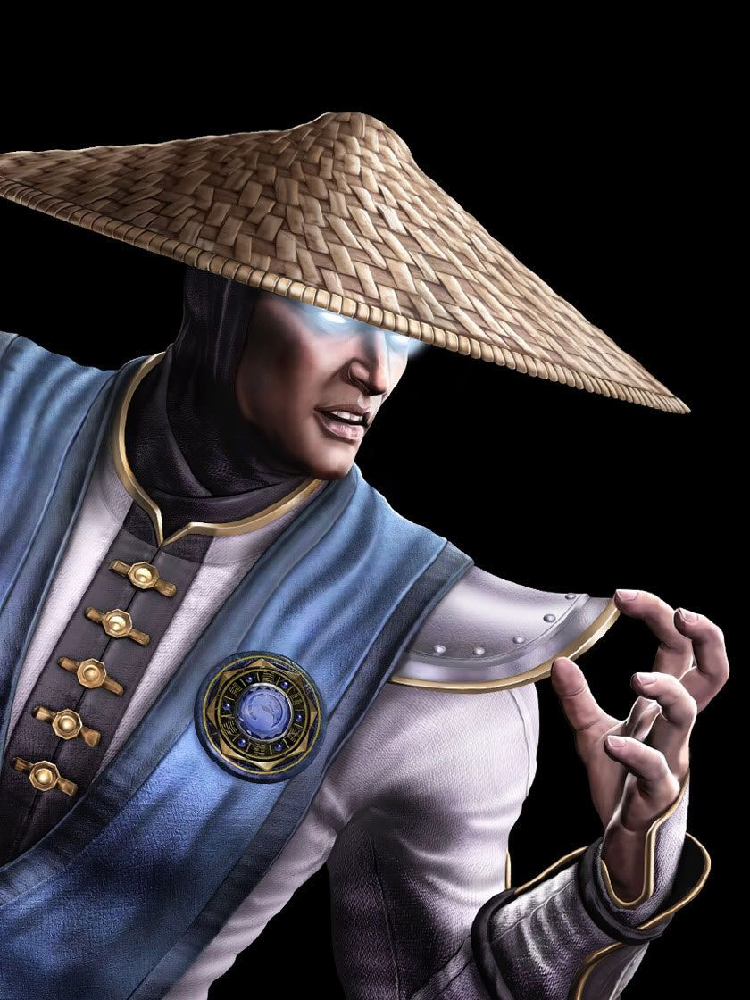
Raiden
Es el dios del trueno y protector designado de La Tierra, Raiden defiende el planeta de innumerables amenazas de otro mundo. Posee muchas capacidades sobrenaturales, como teletransportarse, el control de los rayos y el poder volar.
Más información
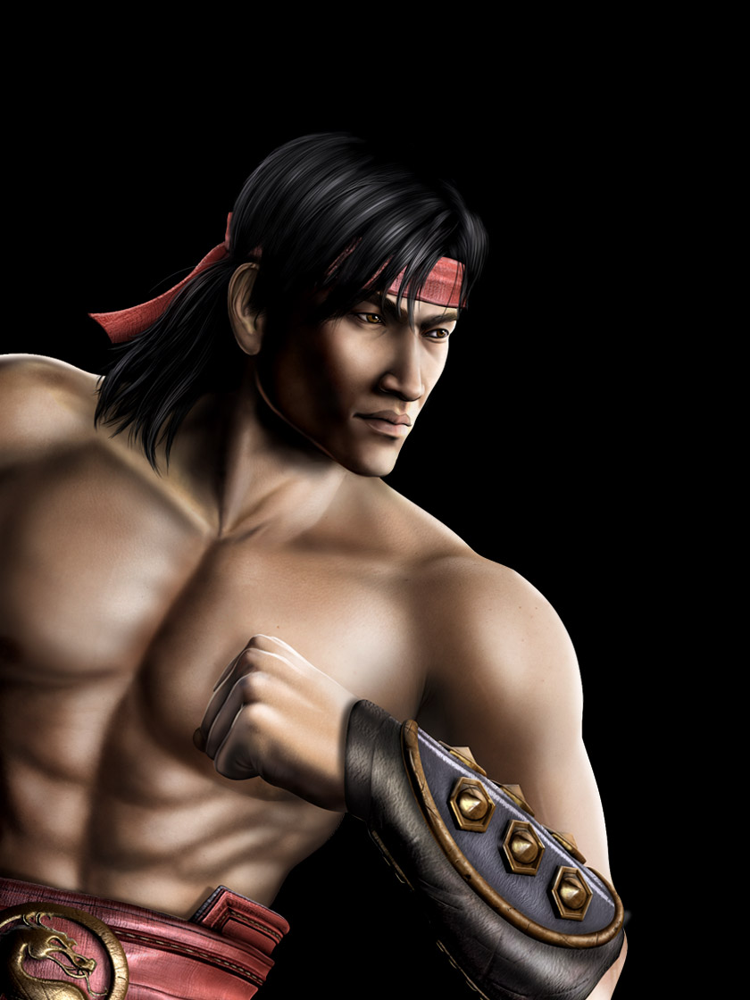
Liu Kang
Monje Shaolin que ingresa al torneo Mortal Kombat para salvar a La Tierra. Después de su victoria en el torneo, se convierte campeón y principal defensor de La Tierra guiado por su mentor, el dios del trueno Raiden.
Más información

Kung Lao
Es el mejor amigo de Liu Kang, antiguo campeón del torneo Mortal Kombat, quien fue derrotado hace 500 años por Goro. Utiliza su famoso sombrero, que también funciona como arma.
Más información

Johnny Cage
Johnny Cage es un actor de Hollywood experto en artes marciales, pero toda la gente cree que los golpes de sus películas son un fraude. Harto de la opinión de los críticos, el actor decide entrar en el torneo de Mortal Kombat para demostrar lo contrario.
Más información
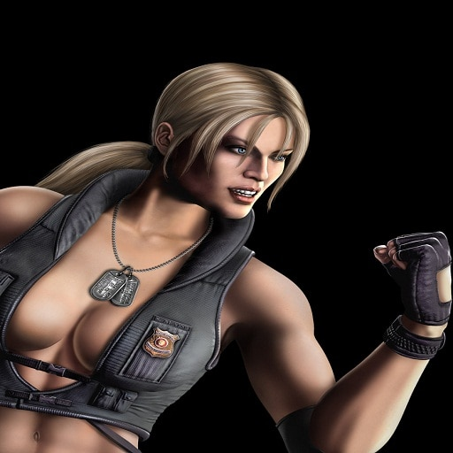
Sonia Blade
Es la comandante de las Fuerzas Especiales de los Estados Unidos, su objetivo en la mayoría de los juegos es perseguir y capturar al criminal Kano. Mas tarde se casa con Johnny Cage y tienen a su hija Cassie Cage
Más información
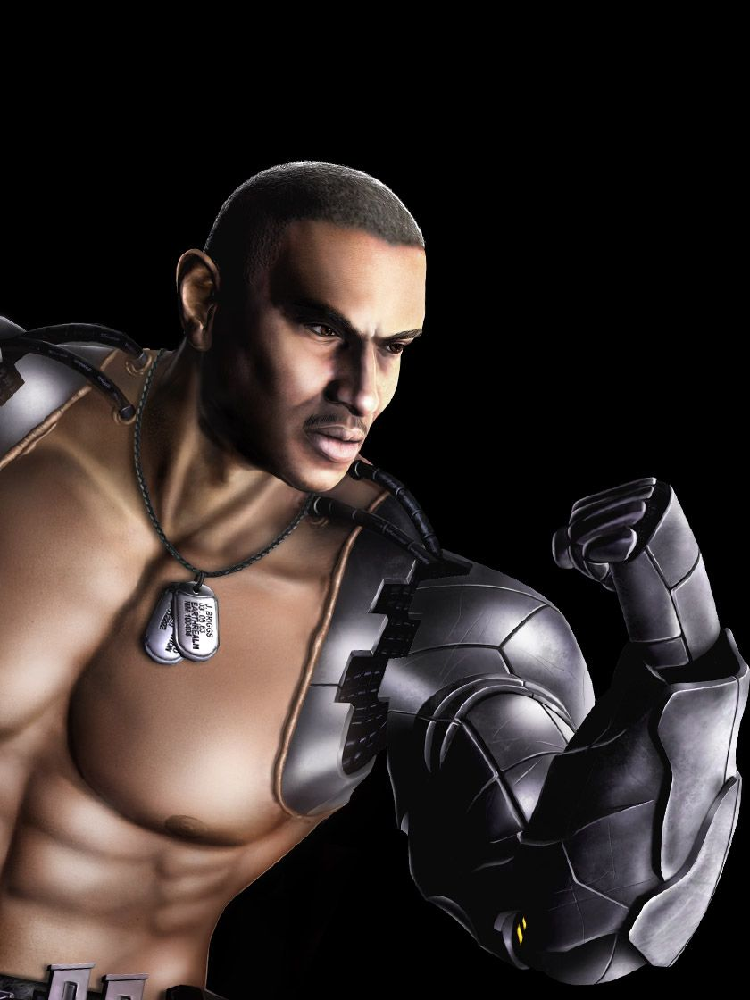
Jax
Oficial al mando de la agente de las Fuerzas Especiales junto con Sonya Blade. Se distingue por sus brazos biónicos de metal y sus habilidades se basan en la fuerza de la parte superior del cuerpo.
Más información
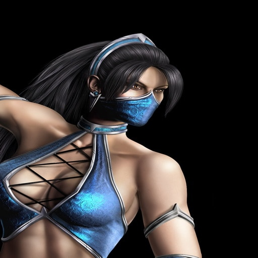
Kitana
Princesa e hija de los reyes Jerrod y Sindel. Viendose obligada sirve a Shao Kahn (su padrastro) como parte de su escuadrón de asesinas, en el que también están su mejor amiga y guardaespaldas, Jade y su hermana (clon), Mileena. También es el interés amoroso del héroe de Mortal Kombat, Liu Kang.
Más información
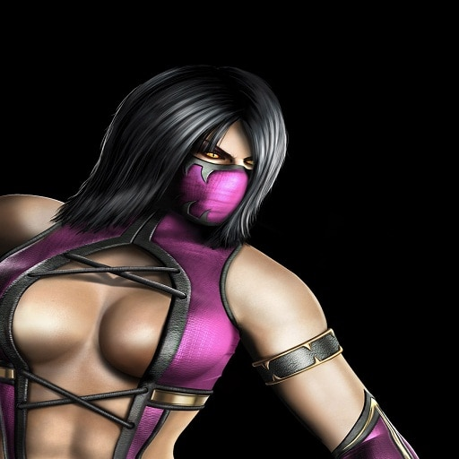
Mileena
Mileena es un clon de Kitana (su rival) creado por Shang Tsung a petición de Shao Kahn, teniendo como única diferencia entre ellas una gran dentadura que sobresale de su boca sin labios.
Más información
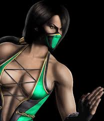
Jade
Es una de las asesinas de élite al servicio del malvado emperador del Outworld, Shao Kahn, también es la mejor amiga, guardaespaldas y confidente de la princesa Kitana, así como su compañera patriota del reino de Edenia, que fue esclavizado por Shao.
Más información

Shang Tsung
Un hechicero poderoso, mortal y un bandido principal en la serie de Mortal Kombat. Es un brujo que tiene que consumir almas para sostener su salud y vida, uno de los villanos más temidos y peligrosos dentro del universo de Mortal Kombat.
Más información
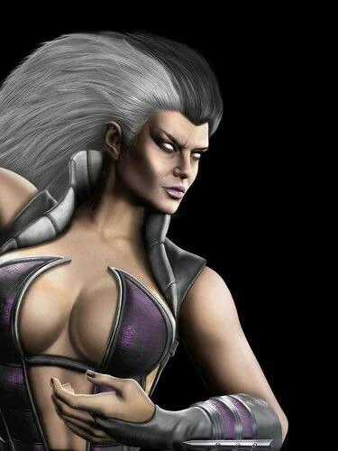
Sindel
Reina y madre de Kitana. Ante la amenaza de perder su trono cuando Shao Kang conquistó su reino, Sindel traicionó a su marido y a su pueblo para mantener su posición privilegiada. Su habilidad es su chillido para aturdir a sus enemigos y proceder a vencerlos .
Más información

Shao Kahn
Shao Kahn es el emperador del Mundo Exterior, conocido por su fuerza divina, su extrema brutalidad y su conocimiento de la magia negra, sirve como el principal antagonista en la mayoría de la serie de juegos.
Más información
En esta seccion hablaremos sobre
Mortal Kombat uno de los videojuegos más conocidos que a lo largo del tiempo ha conquistado a miles de personas en todo el mundo.
Consigue tu Mortal Kombat 2024
Haz click aqui